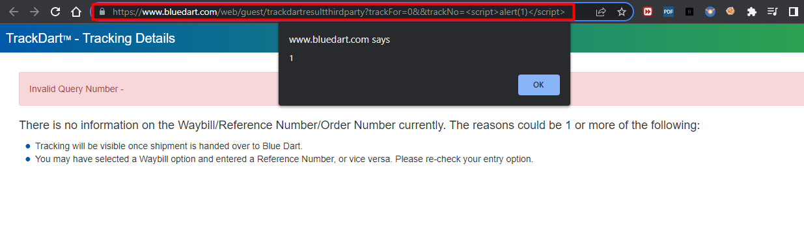

[2] Shortest Path to OSCP : A Realistic take on OSCP Journey

Work in Progress...
A throw back to my first ever bug caught out of blue while checking out the current status of an item I bought which was sent via bluedart.
The identified vulnerability is a reflected Cross-Site Scripting (XSS) vulnerability. It allows an attacker to inject malicious code into the website's HTML response, which is then executed by the victim's browser. In this case, an attacker could execute arbitrary JavaScript code by manipulating the "trackNo" parameter.
Exploitation of this vulnerability can have several negative consequences, including: Execution of arbitrary JavaScript code within the context of the victim's browser, leading to potential theft of sensitive information, session hijacking, or further attacks. Compromised user experience and trust due to unexpected or malicious behavior on the website. Damage to the reputation and credibility of Blue Dart.
To reproduce this vulnerability, follow these steps: Access the URL: https://www.bluedart.com/web/guest/trackdartresultthirdparty?trackFor=0&&trackNo=%3Cscript%3Ealert(1)%3C/script%3E. Observe that the injected script is executed, resulting in the display of an alert dialog with the message "1".
To mitigate this vulnerability, we recommend the following actions: Implement proper input validation and sanitization techniques to ensure that user-supplied data is properly encoded or filtered to prevent the injection of malicious code. Implement Content Security Policy (CSP) headers to restrict the execution of untrusted JavaScript code. Conduct a thorough security review and penetration testing of the entire website to identify and address any additional vulnerabilities.